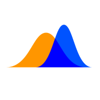

Work Experience
Research project
Machine learning Research
Birmingham
2023
- Developed and deployed a machine learning driven dashboard to cluster FTSE 100 companies based on risk profiles
- Managed stakeholder relationships ensuring alignment with goals and responsibilities.
- Engineered a data pipeline to ingest and preprocess financial data, integrating key metrics and enhancing risk assessment accuracy with Yahoo Finance API
- Designed an intuitive and interactive dashboard interface with advanced visualizations, enabling stake-holders to explore and compare risk profiles dynamically, facilitating data-driven investment strategies and risk-management decisions.
Data Engineering
Software Engineering Intern
Birmingham
2024
- Automated scripts for document generation using Docx module (python)
- Decomposition of business requirements into technical tasks
- Created reports for 100+ investment firms
- Reduced Data-cleaning time by 50 % through automation and other scripting techniques
- Production deploys

Supervised learning/ physics informed Machine Learning
Machine learning Research
India
2022
- Developed a physics-informed machine learning model for simulating population dynamics.
- Fine-tuning of parameters using nonlinear optimization techniques.
- Model development, boundedness of the solution, stability of the solution, sensitivity analysis withstate-of-the-art modeling techniques.
- MCDM models for ranking regions based on carbon footprint.
Society Work
Indian Mathematical Society
India
2022
- Lecturer. Supervised Learning- loss functions
- Coordination. Supporting in the organization (Scheduling, website, events, volunteering).

Society for Data Science
India
2022